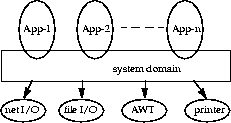
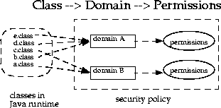

| 목차 | 전의 항목 | 다음의 항목 | Java 시큐리티 아키텍쳐(architecture) |
여기로부터는, 새로운 보호 아키텍쳐(architecture)의 개요를 조금 자세하게 말해 그 기능에 대해 간단하게 설명합니다. 최초로, 새로운 아키텍쳐(architecture)의 배후에 있는 기본 개념의 개요를 설명합니다. 다음에, 주요한 새로운 클래스를 계통적으로 소개합니다. 액세스권의 지정, 정책와 관련 기능, 액세스 제어와 그 사용법, 클래스의 안전한 로드와 해결의 순서에 설명합니다.system security의 기본 개념이며 중요한 구축 블록인 것이, 보호 도메인 [Saltzer and Schroeder 75] 입니다. 도메인이란, 어느 주체가 현재 직접 액세스 할 수 있는 객체세트이다고 생각됩니다. 여기서 주체란, 액세스권이 주어지는 (그 결과적으로의 책임이 있다), 컴퓨터 시스템내의 존재를 의미합니다. JDK 1.0 으로 사용되는 sandbox 는, 고정된 경계를 가지는 보호 도메인의 일례입니다.
보호 도메인의 개념은, 보호의 단위의 그룹화와 분리에 편리한 기구로서 일합니다. 예를 들어, 허가된 상호 동작이 반드시, 신뢰할 수 있는 시스템 코드를 통한 것인가, 관계하는 도메인에 의해 명시적으로 허가된 것의 어느 쪽인지이도록(듯이) 하기 위해서, 보호 도메인을 분리해 상호 동작을 할 수 없게 할 수가 있습니다. 다만 이 기능은, 아직 편입 기능으로서는 제공되고 있지 않습니다. 객체 액세스에 관한 기존의 규칙은, 새로운 시큐리티 아키텍쳐(architecture)의 원에서도 유효한 것으로 주의해 주세요.
보호 도메인은, 일반적으로 2 개(살)이 다른 카테고리, 즉 시스템 도메인과 어플리케이션 도메인으로 분류됩니다. 중요한 점은, 「파일 시스템이나 네트워크 설비, 화면이나 키보드등의 보호된 외부 자원은 모두, 시스템 도메인을 통해서만 액세스 할 수 있다」라고 하는 것입니다. 다음의 그림은, Java 어플리케이션 환경의 도메인 구성입니다.
 [D]도메인에는, 개념상, 각 클래스의 인스턴스에 동일한 액세스권 세트가 주어지고 있는 1 조의 클래스가 포함됩니다. 보호 도메인은, 현재 유효한 정책에 의해 결정됩니다. Java 어플리케이션 환경은, 다음의 그림과 같이, 코드 (클래스와 인스턴스)로부터 보호 도메인에, 한층 더 보호 도메인의 액세스권에의 매핑을 보관 유지합니다.
 [D]실행의 thread (이것은 대부분 1 개의 Java thread에 결합되지만, 반드시 그 필요는 없고, 또 배후의 operating system의 thread의 개념에 결합될 필요도 없다)는, 단일의 보호 도메인의 범위내에서 발생하는 일도 있어, 또 어플리케이션 도메인과 시스템 도메인에 관계하는 일도 있습니다. 예를 들어, 출력 스트림에의 유일한 액세스 포인트는 시스템 도메인이므로, 메세지를 출력하는 어플리케이션에는 시스템 도메인과의 상호 동작이 필요합니다. 이 경우에 중요한 것은, 어플리케이션이 시스템 도메인을 호출하는 것에 의해, 그 이외의 액세스권을 획득하는 것이 결코 없는 것입니다. 그렇지 않은 경우, 시큐리티상 중요한 문제가 발생할 가능성이 있습니다.
반대로, 예를 들어 AWT 시스템 도메인이 있는 애플릿의 페인트 메소드를 호출해, 그 애플릿을 표시하는 경우와 같이, 시스템 도메인이 어플리케이션 도메인으로부터 메소드를 기동하는 경우는, 유효한 액세스권이, 그 어플리케이션 도메인으로 현재 유효하게 되어 있는 액세스권과 동일한 것임이 중요합니다.
즉, 「약하다」도메인은, 강한 도메인을 호출한 결과적으로, 또는 강한 도메인에 불려 간 결과적으로 추가의 액세스권을 얻을 수 없습니다.
2 개의 보호 도메인에 관계하는 thread에 대한 이 논의는, 복수의 보호 도메인에 걸치는 thread에도 당연 적용시키고 생각할 수가 있습니다. 액세스권의 계산에는, 다음과 같은 간결하고 현명한 경험칙이 있습니다.
doPrivileged메소드는, 어느 신뢰할 수 있는 코드의 일부가, 그 호출원의 어플리케이션으로부터 직접 이용할 수 있는 자원보다 많은 자원에, 일시적으로 액세스 할 수 있도록(듯이) 합니다. 이것은, 다음과 같은 경우에 필요하게 됩니다. 예를 들어, 어느 어플리케이션이 폰트가 들어간 파일에의 직접적인 액세스를 허가되어 있지 않을 때에, 문서를 표시하는 시스템 유틸리티가 사용자에 대신해 그 폰트를 취득할 필요가 있는 경우 등입니다. 이 상황에 대처하기 위해서, 시스템 도메인에doPrivileged메소드가 준비되었습니다. 실제로는, 이 메소드는 모든 도메인을 이용할 수 있습니다.실행중에 중요한 시스템 자원에의 액세스 (파일 입출력이나 네트워크 입출력등)가 요구되면(자), 자원을 관리하는 코드는 특별한 AccessController 클래스 메소드를 직접 또는 간접적으로 호출해, 그 요구를 평가해, 요구를 인정할지 어떨지를 판단합니다.
이 평가방법은, 상기의 경험칙에 따르고 있어 그것을 일반화하는 것입니다. 실제의 평가의 실시 방법은, 구현에 따라서 다릅니다. 기본적으로는, 호출 이력과 관계하는 보호 도메인에게 줄 수 있고 있는 액세스권을 조사해 요구가 허가되는 경우에는 그대로 복귀해, 요구가 거부되는 경우에는 시큐리티 예외를 발행합니다.
마지막으로, 각 도메인 (시스템 도메인 또는 어플리케이션 도메인)은, 한층 더 자신의 도메인 경계내의 내부 자원의 보호를 구현할 수 있습니다. 예를 들어, 은행 거래의 어플리케이션에서는, 당좌예금, 보통예금, 예금 인출등의 내부 개념을 보호할 필요가 있습니다. 이러한 보호의 시멘틱스는, Java 2 SDK 에 의해 예측하거나 강제하거나 할 수 없다고 생각되므로, 이 레벨의 보호 시스템은, 시스템이나 어플리케이션의 개발자에게 맡기는 것이 최선입니다. 그러나, 우리는, 개발자의 일을 간단하게 하기 위해서 도움이 되는 기본 요소를, 할 수 있는 한 제공합니다. 이러한 기본 요소의 하나에 SignedObject 클래스가 있습니다. 이 클래스에 대해서는, 나중에 자세하게 설명합니다.